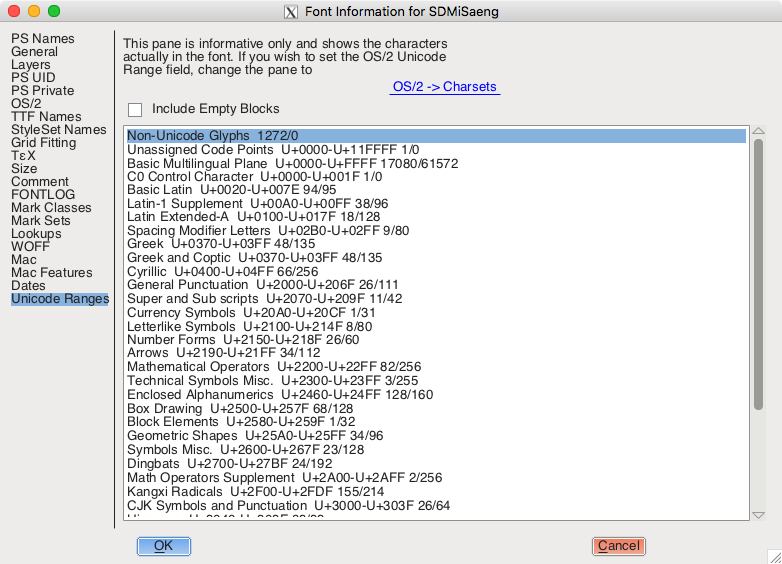

이전 포스트에서 Hexo 내 폰트를 CDN 을 이용해 변경했습니다. 구글 폰트에서 제공하는 폰트 url 만 있으면 블로그 <header> 에 바로 포함시켜 쉽게 변경할 수 있습니다. 하지만 내가 사용하고자 하는 폰트가 없다면 어떻게 할까요?
이번 포스팅에서는 웹에서 사용하는 폰트에 대해 자세히 알아보고 무료 폰트인 '미생체’를 이용해서 CDN 없이 블로그의 폰트를 적용해보겠습니다.
웹 폰트
우리가 일반적으로 사용하는 폰트는 글자수가 굉장히 많습니다. 한글은 영어나 숫자와는 다르게 자음과 모음을 조합해서 글자를 만들기 때문입니다. 한글로 표현할 수 있는 글자 수는 11,172자나 되며 이 중 자주 사용하는 글자만 추려봐도 2,350자나 됩니다.[1] 여기에 각종 기호와 숫자, 단위, 일본어(히라가나, 가타카나), 한자 4888자 등을 추가한 것이 KS X 1001 완성형 한글 코드입니다. 이걸 기반으로 하는 문자 인코딩이 EUC-KR입니다.
웹에서는 필요한 폰트를 저장해서 사용하기 때문에 폰트 용량이 클 경우에는 페이지 로딩 속도가 현저하게 느려집니다. 물론 한번 저장한 폰트는 재사용이 가능하기에 다른 사이트에서도 많이 사용하는 폰트라면 큰 문제가 없지만, 유니크한 폰트를 사용할수록 사이트에 방문한 사용자는 산뜻한 폰트를 마주하기도 전에 답답함을 느낄 겁니다. 모바일에서 접속할 경우엔 데이터에도 무리가 가게 되겠죠.
따라서 우리는 보통 웹에서 사용하는 폰트는 용량을 줄이고 최적화한 폰트를 사용합니다. 웹 폰트라고 하는데, 앞서 말한 구글 폰트에서는 저작권에 상관 없이 사용할 수 있는 웹 폰트를 제공하고 있습니다. 이러한 폰트를 이용하면 사용자의 시스템에 폰트가 설치되어 있지 않아도 브라우저에서 다운로드해서 해당 폰트로 보여집니다. 또한 한번 받아놓은 폰트는 재활용되기 때문에 많이 사용되는 폰트일수록 이미 다운받아져 있을 가능성이 높기 때문에 성능 상 유리합니다.
폰트의 종류
폰트가 적용되는 방식을 알아보기 전에 폰트의 종류부터 살펴보겠습니다.
Serif

세리프는 글자의 끝이 뾰족하게 돌출된 형식을 말합니다.[2] 바탕체(명조체)가 세리프에 속합니다.
Sans-Serif

Sans 는 '없음’을 뜻하는 프랑스어로 산세리프는 세리프가 없는, 즉 돌출된 형태가 없는 글꼴입니다. 돋움체(고딕체)가 산세리프에 속합니다.
Monospace

모노스페이스는 각 글자가 사용하는 너비가 동일한 글꼴입니다. 보통 개발용 폰트는 각 글자의 혼동을 방지하기 위해서 각 글자가 사용하는 너비를 동일하게 가져갑니다.
Cursive

손으로 휘갈겨 쓰듯이 쓴 글꼴로 필기체를 의미합니다.
폰트가 적용되는 방식
1 | p { |
폰트는 보통 하나만 지정하지 않고, 여러 개를 묶어서 font-family 라는 이름으로 지정합니다. 왜냐하면 각 폰트에 따라서 지원하지 않는 문자가 있을 수 있고, 폰트 파일을 시스템에서 지원하지 않는 경우도 있기 때문입니다. 폰트를 여러개 지정한 경우 앞에서부터 차례로 적용되는데, 만약 맨 처음 지정한 글꼴이 지원하지 않으면 다음 글꼴을 적용하는 식입니다. 그래서 맨 마지막에 기본 글꼴을 적어주게 되면 브라우저에서 기본으로 지정되어 있는 글꼴이 사용됩니다.
Safe Web Font
물론 깨질 염려 없이 여러 브라우저와 시스템에서 사용할 수 있는 공통 폰트도 있습니다.[3]
Serif
- Courier
- Courier New
- Georgia
- Times
- Times New Roman
Sans-Serif
- Arial
- Arial Black
- Tahoma
- Trebuchet MS
- Verdana
Monospace
- Courier
- Courier New
Cursive
- Comic Sans (Linux 제외)
폰트 포맷 적용 전략
하지만 우리는 기존 웹 폰트에 없는 폰트를 사용하고자 합니다. 그렇다면 서버에 폰트를 직접 올려야겠죠. 폰트 파일은 하나가 아니라 여러 종류가 있습니다.[4] 허나 안타깝게도 한번에 모든 브라우저를 지원할 수 있는 폰트 컨테이너는 없습니다. 모든 브라우저를 커버하기 위해서는 4가지 정도의 글꼴을 사용해야 합니다.
EOT (Embedded Open Type)
익스플로러 하위 버전(IE8 이하)에서 지원합니다. IE9 부터는 WOFF 를 지원해서 필요 없지만, 아직 IE 8 이하의 브라우저도 꽤 쓰이는 것 같습니다.
TTF (True Type Font)
선을 그리는 방식인 외곽선 글꼴(벡터)로 확대해도 잘 깨지지 않습니다.
WOFF (Web Open Font Format)
웹에서 사용할 수 있는 공통 폰트를 위해 표준화된 폰트입니다. 많은 제조사들이 지원하고 있습니다.
WOFF 2.0
WOFF 폰트의 압축률을 늘려서 WOFF 대비 평균 30%, 최대 50%까지 용량을 절감할 수 있는 타입입니다.
최적의 폰트 포맷 적용 방법
결론적으로 다음과 같은 우선순위로 적용하면 됩니다.[5]
- WOFF 2.0 을 먼저 적용한다.
- 지원하지 않으면 WOFF 를 적용한다.
- WOFF 를 지원하지 않는 Android 4.4 이전 브라우저에는 TTF 를 적용한다.
- WOFF 를 지원하지 않는 IE 8 이하의 브라우저에는 EOT 를 적용한다.
폰트 파일 최적화
이제 우리가 할 일은 폰트를 선택하고 웹에서 사용할 수 있도록 용량을 줄어야 합니다. 어떻게 줄이냐구요? FontForge 라는 프로그램을 이용해 폰트 파일을 열어서 필요없는 폰트를 지워야합니다(!). 보통 웹 폰트는 2,350자로 이루어져 있는데, 줄이자고 하면 더 줄일 수 있습니다. 우리가 보통 사용하는 글자들은 더 한정적이기 때문입니다. 굵은 글꼴이 필요하지 않다면 굵은 글꼴도 삭제해도 됩니다. 적은 용량의 웹 폰트인 이롭게 바탕체의 경우 보통 굵기(미디엄)만 제공합니다.
FontForge 는 Windows 와 macOS 모두 지원합니다. 저는 맥에서 설치해보겠습니다. 먼저 홈페이지에서 다운로드 하고, Detailed Guid 버튼을 눌러서 세부 스텝을 따라 설치하면 됩니다. xQuartz 를 통해서 실행되기 때문에 먼저 설치가 되어야 합니다.
설치 완료 후 실행하면 다음 화면을 확인할 수 있습니다.
Open Font 눌러서 폰트 파일을 선택합니다. macOS 에서 폰트 경로는 ~/Library/Fonts 폴더입니다. 파일을 연 후에 Element > File Info > Unicode Range 에 들어가면 유니코드 범위 아닌 문자들을 선택할 수 있습니다. 선택 후 Clear 해서 지울 수 있습니다.

하지만 이 툴이 오픈소스이다보니 불안정한 면도 있고 문자가 워낙 많아서 지워야할지 말아야할지 쉽게 알 수 없는 문자들도 많습니다. 쉬운 작업이 아니네요.
다행히 이번에 작업해 볼 미생체는 미리 최적화 작업을 해주신 분이 계십니다.
미생체 적용해보기
미생체는 윤태호 작가님의 손글씨로 만든 무료 폰트입니다. 11,172자를 손수 작성해 폰트를 만드셨다니 정말 대단하십니다. 무료 배포의 의도를 살려 2,350 글자로 추려서 웹폰트로 만들어주신 블로거님도 계십니다. 감사합니다.
압축 파일을 열고 eot, ttf, woff, woff2 총 4가지 파일을 복사합니다. Hexo 블로그에서 각종 소스들을 저장하는 source 폴더 내 fonts 폴더를 생성해서 넣어줍니다.
그리고 @font-face 구문을 이용해서 서버에서 받아와 사용할 폰트를 지정해줍니다. head.ejs 에 다음과 같이 추가해줍니다. 그럼 woff2 -> woff -> ttf -> eot 타입 순으로 적용하게 됩니다.
1 | <style type="text/css"> |
이제 font-family 에 지정해야겠죠? 이전 포스트에서 지정했던 것처럼 Hueman 테마 기준으로는 _variables.styl 파일을 수정합니다. 만약 미생체에서 지원하지 않는 글꼴이 있으면 다음 글꼴로 넘어가는 식으로 적용됩니다.
1 | // Fonts |
미생체가 적용된 모습입니다.
저작권 주의
무료로 제공되는 웹 폰트의 경우에는 크게 상관없지만, 일반적으로 사용하는 폰트들, 그 중에서도 상용 폰트의 경우 저작권에 유의해야 합니다. 상용 폰트를 돈 주고 샀다고 해서 모든 범위에 사용할 수 있는 것이 아니기 때문에 사용 가능 범위를 미리 확인해봐야 합니다.
처음에는 간단하게 작성하려 했는데 내용이 많아져 글이 길어졌네요. 이번 포스팅에서는 웹 폰트에 대해 자세히 알아보고 폰트를 직접 서버에 올려 적용해봤습니다. 감사합니다.
- 1.현대 한글은 낱자를 엮어 11,172(첫소리 19 × 가운뎃소리 21 × (끝소리 27 + 끝소리 없음 1))글자 마디를 쓸 수 있다. 11,172자 중 399자는 무받침 글자이며 10,773자는 받침 글자이다. 사용 빈도는 KS X 1001 완성형 한글 코드에 선별된 2,350글자가 상위 99.9%로 알려져 있다. ↩
- 2.세리프 ↩
- 3.Web Safe Fonts ↩
- 4.Font Files ↩
- 5.웹 글꼴 최적화 ↩